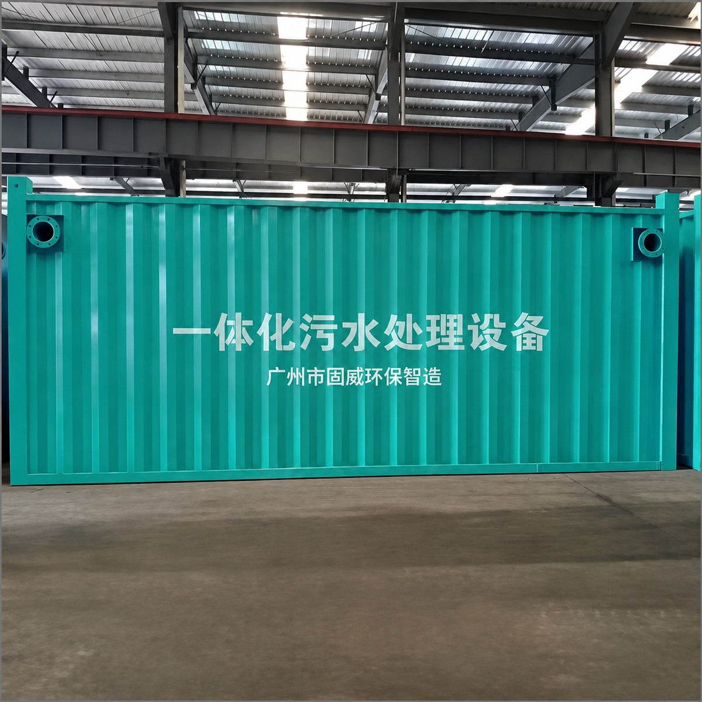

模块化箱体
箱式结构便于集中布置处理单元与配套管路，具体工艺按污水来源和处理目标配置。

箱式结构便于集中布置处理单元与配套管路，具体工艺按污水来源和处理目标配置。
可根据运行需求配置自动控制与报警功能，配合日常巡检和设备维护。
结合基础、管道接口、供电和检修空间安排安装，完成连接与调试后投入运行。
可结合城乡社区、乡村站点、景区服务区及厂区生活污水等场景沟通配置。生产废水与中水回用项目需按水质及出水要求另行确定处理方案。
设备外观与配置，点击图片可放大查看。


按处理量选择设备型号，具体配置结合水质与处理要求确定。
| 型号 | 处理量（m³/h） |
|---|---|
| GWSY1 | 1 |
| GWSY2 | 2 |
| GWSY3 | 3 |
| GWSY5 | 5 |
| GWSY7 | 7 |
| GWSY10 | 10 |
| GWSY15 | 15 |
| GWSY20 | 20 |
| GWSY25 | 25 |
| GWSY30 | 30 |
| GWSY40 | 40 |
| GWSY50 | 50 |
设备处理能力与进水水质、运行时段和出水要求有关，具体配置需结合项目条件确定。
A²/O＋MBR 工艺将生化处理与膜分离结合，具体流程需结合水质及排放要求选择。
A/O 生物接触氧化与 A²/O＋MBR 可按项目条件比较，流程和设备配置需结合水质与处理目标确定。
处理量是沟通起点，水质、运行时段和排放目标也需要一并核对。
提供日均水量、集中排水时段和已知峰值；暂不清楚时，可先整理用水及生产记录。
说明污水来源，提供已有检测报告及采样时间，区分正常生产与清洗排水。
说明纳管、排放或回用途径，并提供已明确的指标与项目要求。
准备可用尺寸、管道标高、供电、检修通道及新建或改造条件。
填写已有信息，便于沟通水量、水质和现场条件。
免费下载，无需留联系方式。
| 核对项目 | 请提供或说明 | 配置沟通时确认 |
|---|---|---|
| 水量与运行时段 | 日均水量、峰值、每天运行时段 | 处理能力、调节需求与设备组合 |
| 水质与处理目标 | 检测报告、排放去向与目标指标 | 预处理、生化及后续处理的适用组合 |
| 尺寸与布置 | 场地尺寸、接口标高、运输与吊装条件 | 外形尺寸、材质、接口和检修空间 |
| 用电与运维 | 供电条件、值守方式、已有监控系统 | 装机功率、运行策略、报警和维护要求 |
| 供货与现场工作 | 设备采购、配套施工或改造需求 | 供货清单、安装调试分工与交付资料 |
可以先说明项目类型、水量和现场条件，再进一步沟通设备需求。
在线留言暂未开放，请通过电话咨询。 18026396076
电话沟通：18026396076